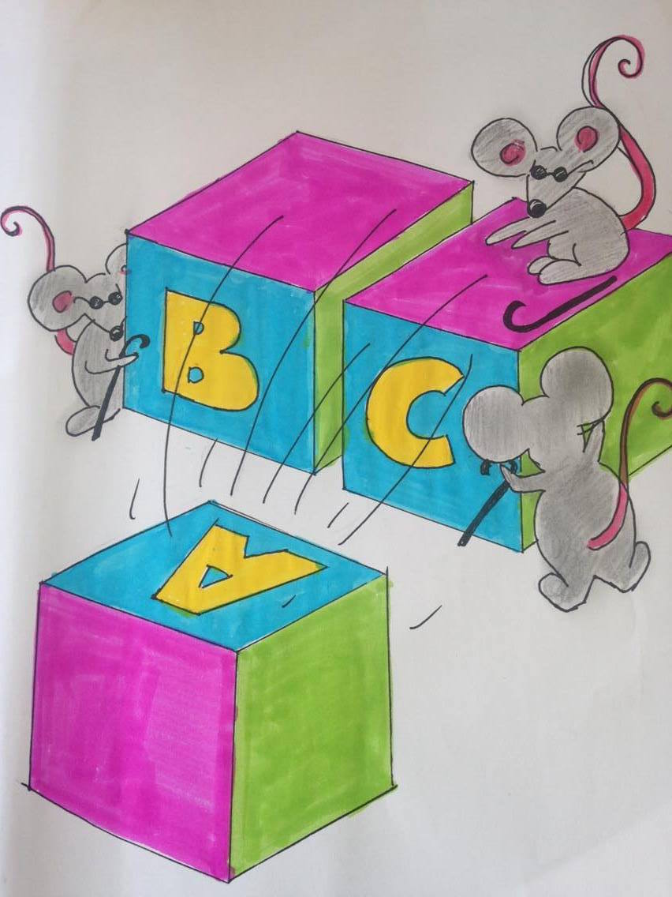
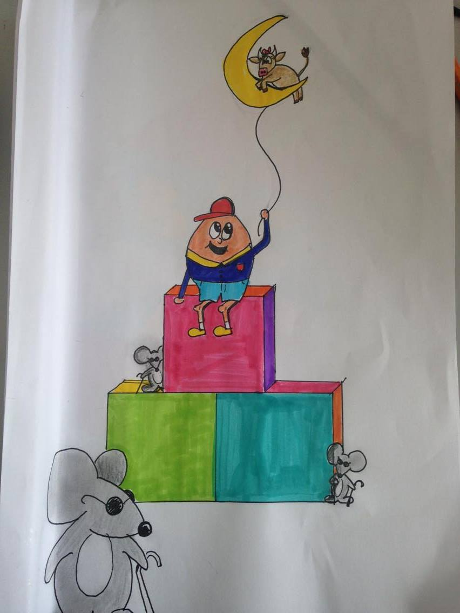
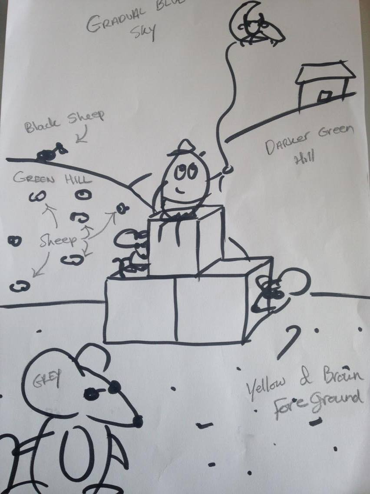

For most of my designs, I will do about 40 doodles, spending 2 minutes on each one. I will then spend about 7-10 minutes doing my main sketches for the design. Below you can see 3 of my main sketches I did for a project in which I had to design a poster for a room without using any words to describe what the room was. The concept was "Early Childhood".
First Sketch

Second Sketch

Third Sketch

Final Poster Design
After sketching up different ideas, I came up with this design and produced it on Adobe Illustrator.